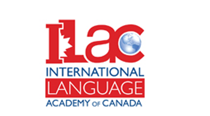
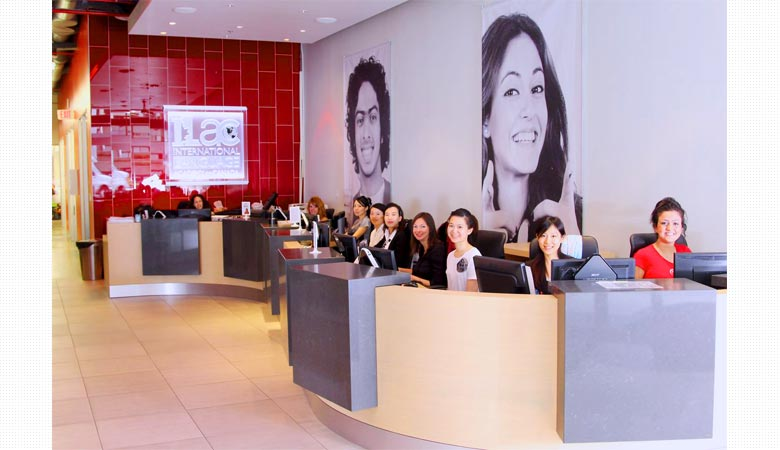
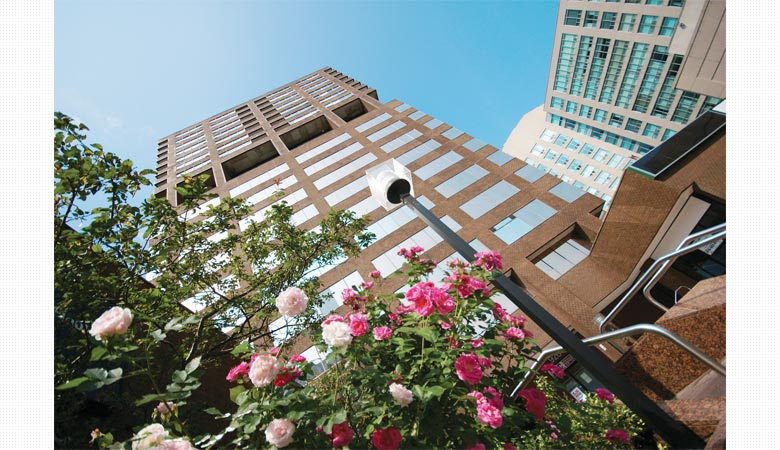
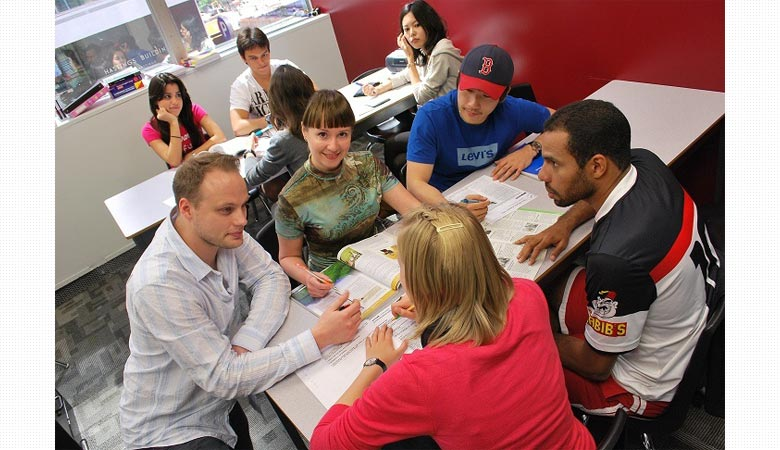
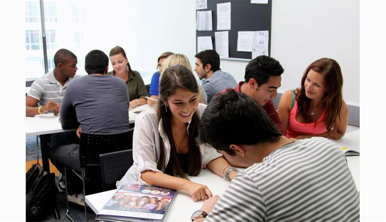
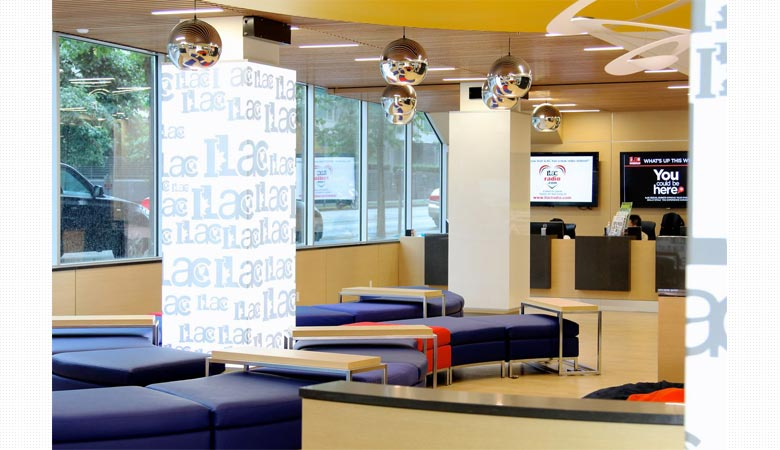
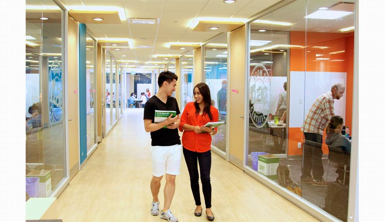

 【カナダ / バンクーバー・トロント】
世界70カ国以上の仲間と英語を学び、国際社会へ飛び出そう！
ILAC / アイラックInternational Language Academy of Canada (インターナショナル・ラングエッジ・アカデミー・オブ・カナダ)


International Language Academy of Canada (インターナショナル・ラングエッジ・アカデミー・オブ・カナダ)
世界70カ国以上の仲間と英語を学び、国際社会へ飛び出そう！
世界70カ国以上の仲間と英語を学び、国際社会へ飛び出そう！

ロケーション
トロント・キャンパスは、ダウンタウン中心部に位置し、
バンクーバー・キャンパスは、交通や買い物の便がよく快適に生活できるエリアです。
トロント・キャンパスは、ダウンタウン中心部に位置し、
バンクーバー・キャンパスは、交通や買い物の便がよく快適に生活できるエリアです。

70ヵ国以上から留学生が集まり異文化が学べます
ヨーロッパ30％、南米30％、アジア30％のちょうどいい国籍バランスで
制限を設けることにより常によいバランスを保っています。
ヨーロッパ30％、南米30％、アジア30％のちょうどいい国籍バランスで
制限を設けることにより常によいバランスを保っています。

きめ細やかなレベル分け
17段階のレベル分けで、英語力に合わせてレッスンが受けられます。
併設カレッジでのインターンシップも人気のプログラムです。
17段階のレベル分けで、英語力に合わせてレッスンが受けられます。
併設カレッジでのインターンシップも人気のプログラムです。
経験のある選ばれた教師陣
TESOLの資格と教師経験のある教師が楽しく丁寧に教えます。
総合力をつけるためにプレゼンテーションなども盛り込んでいます。
TESOLの資格と教師経験のある教師が楽しく丁寧に教えます。
総合力をつけるためにプレゼンテーションなども盛り込んでいます。

シンプルなコース分け
月曜日～金曜日までのプリンシパルクラスで総合力を、火曜日と木曜日の選択授業で苦手を強化。
目的や目標に合わせてクラスが選べます。
月曜日～金曜日までのプリンシパルクラスで総合力を、火曜日と木曜日の選択授業で苦手を強化。
目的や目標に合わせてクラスが選べます。

サポート体制もばっちり
日本人のカウンセラーが各キャンパスに在勤、留学中のサポートをします。
留学のことは経験者に聞くのが一番！何でも相談してください。
日本人のカウンセラーが各キャンパスに在勤、留学中のサポートをします。
留学のことは経験者に聞くのが一番！何でも相談してください。
画面をクリックするとビデオが再生されます。
＜Cambridge International College English Course＞
＜Cambridge International College English Course＞
画面をクリックするとビデオが再生されます。
＜ILAC Social Events and Activities＞
＜ILAC Social Events and Activities＞